X
暂无下载
X

视频：应有但嗲五年内此外

视频：应有但嗲五年内此外
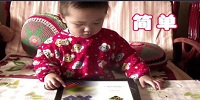
视频：应有但嗲五年内此外
视频：应有但嗲五年内此外
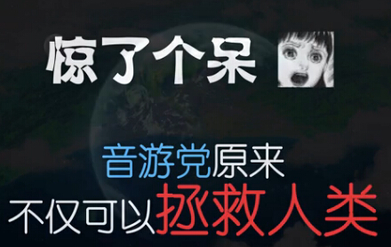
视频：应有但嗲五年内此外
视频：应有但嗲五年内此外
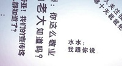
Copyright © 2018 LONGMOBILE Ltd.All Rights Reserved.龙渊网络 版权所有 蜀ICP备15023798号
-
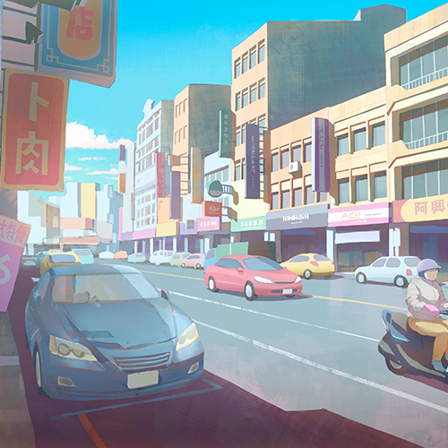01. 兰空镇街景2016 MAY 03三面环山的兰空镇是个纯朴但先进的城市，连接车站的主要干道上车水马龙，忙碌的人们在日常的工作与生活中奔波着。成衣量贩、便当店、通讯行等等大大小小的商店餐厅林立，服务着每一位居民与来往的游客。如果有机会到兰空镇旅游，别忘了品尝当地的名产──卜肉，特殊的料理方式总是让人回味无穷。
-
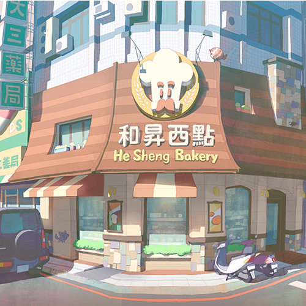02. 和升西点2016 MAY 05位于兰空镇市中心、商店街内的和升西点是一间经营许久的传统面包店，老板每天烘培出经典的台式面包，每当经过西点店的时后，都能闻到刚出炉的面包香味，让人直流口水；雀跟狼从小生长在店内，耳濡目染地学会了制作面包和西点的技巧，雀擅长的是传统的面包和创新的口味，而狼则靠着惊人的天分创作各种 美味的甜点与蛋糕。
-
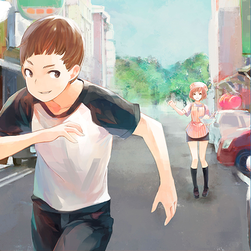03. 偷溜2016 MAY 08「我出去噜！掰掰！」一头棕发的少年飞快地穿过柜台，拉开玻璃门跳了出去。门铃的声音还回荡着，厨房里的雀就跟着冲了出来。
「不要跑！今天轮到你顾店了～～～」雀绑着店里的头巾，手上捧着装满酱料的钢盆，一边跑一边对着前头的狼大喊。
雀的声音几乎整条街的人都听见了，老邻居们露出会心的笑容。
「我才不要哩～～～这么简单的事情给姐姐作就好了！掰掰！」狼转过头来做了个鬼脸，逃跑的速度反而更快。
一转眼，狼已经消失在街角。
「可恶，又被他溜掉了。」雀一直追到上气不接下气才停了下来，正巧停在一间卖名产的老店前面。
「爸爸也真是的，看到他要跑出去怎么没阻止他……」雀念着的同时不忘搅拌手上的法士达酱。
「又被他逃掉啦？」名产店的老板笑着走出店门，邻居们早就习惯了狼的逃亡戏码，总是当成平淡生活中的一点调剂。
「陈伯伯午安，不好意思又吵到你们了……」雀转了过来，只见陈伯伯手上拿着一盒兰空镇名产递到她面前。
「没关系没关系，大家都是老邻居了。来，这个请妳吃。」
「这……真是太谢谢您了。」雀收下名产急忙地要鞠躬回礼时，连带把法士达酱洒了满地。
「对…非常对不起。」雀一时心慌着急想要蹲下来清理，手忙脚乱地又把已开封的名产掉到地上，结果全都混在一块。
夏天将至的周末时刻，商店街一如往常地热闹。
今天，雀想到了全新的甜点制作方法。 -
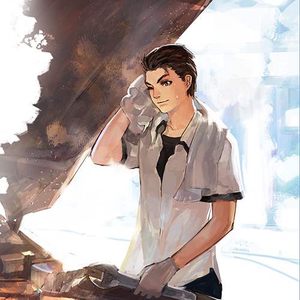04. 修车2016 MAY 10「臭小子，车还要修多久？客人赶着要了！」阿海的父亲挂上电话，朝着正在前头修车的阿海大吼。
「老爸，再给我半小时，就快好了。」阿海用挂在脖子上的毛巾随手擦掉脖子上的汗水，抓起板手再次探头进冒着黑烟的引擎室。
阿海家的修车厂位于火车站前的大马路上，繁忙的交通来回奔波着大小车辆，也为修车厂提供了不少生意。除了阿海正在修理的黑色轿车外，另一台银色轿车也在顶车机上等待着。
「动作快一点，等等还有一台车要修，就算你练习时间到了，也要给我修完才准走！」阿海的父亲再次强调，抓着工具走向银色轿车的下头。
「老爸～～～」虽然嘴上抱怨了几声，但阿海还是重新投入工作。
阿海的制服上沾染了不少引擎上的油污，双手也因为被机具烫伤或夹到而点缀了不少伤口和疤痕，但阿海对这一切全然不在意。
继续在自家的修车厂工作，是阿海毕业后的计划；没有升学计划的阿海，只想要像现在一样跟Jessy玩吉他、唱歌，便觉得相当满足。
「终于修完了！呀呼～～」四十五分钟后阿海终于盖上引擎盖，走到店门口蹲着洗手。平时爱用的吉他已经挂在洗手台旁，等待着他。
「对了，臭小子你练完琴顺便去雀他们家买几个面包回来。」阿海的父亲从口袋掏出百元钞票塞到阿海的口袋里，随手捏了捏他的肩膀。
「不准都买肉松！」
「知道啦，老爸！」阿海灿烂的笑着。 -
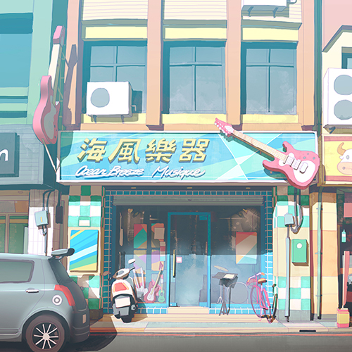05. 海风乐器行2016 MAY 13海风乐器行位于商店街上，与和升西点比起来算是位于比较前头的位置；商店街原本是港区运来的舶来品的集散地，因此发展的欣欣向荣，当时的老板也随着船运进口了许多吉他、爵士鼓等舶来品提供给来往的旅客和船员。后来随着产业转移、服务业兴起之后镇民的生活质量与收入也提高了，老板的乐器行生意也渐渐转形成服务、教学和带领学校社团的工作，成为兰空镇不可或缺的一间乐器行。
-
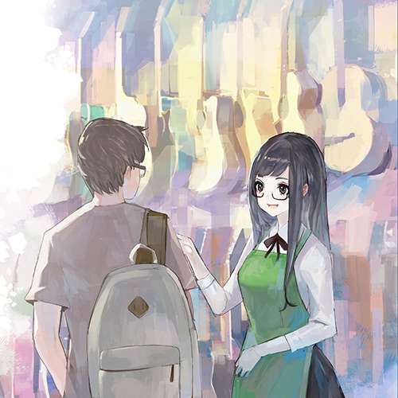06. 打工2016 MAY 14「芊芊，不好意思又要麻烦妳整理了。」一名风姿绰约的妇女靠在丈夫身旁，对着正在拆开纸箱的芊芊说。
「舅妈不会啦，这本来就是我的工作，你们放心出去约会吧。」刚下课的芊芊没有换上休闲服，只是在制服外套上打工用的围裙。
「那么等我们回来之后，再来对一对这个月的班表吧。对了，那个小帅哥不是喜欢用gibson的弦么？这次我们有多进一些，妳记得留给他喔」
「舅……舅妈。」芊芊的脸顿时翻红。由于海风乐器行是镇上唯一提供练团室和练习室的乐器行，因此喜欢音乐的年轻人都时常来此光顾。
Jessy、阿海从国中开始就是这里的常客，有时也会拜托芊芊帮他们定一些国外的音乐杂志或乐谱。
「恩……吉他弦要放那边。」芊芊清点着收到里的商品，一面将物品归位。
「调音器四个，确认。这个都放在柜台里。」海风乐器行的空间并不算太大，一楼除了摆放最后欢迎的木吉他、电吉他之外，便只有柜台和后头的洗手间等设施。
地下一楼则是乐团用的练团室，二楼跟三楼则分别隔出了音乐教室和放有整套爵士鼓的练习室。
「恩......这个要放在……这边。」芊芊抱着本期新的乐谱杂志，小跑步放到后头的书柜。
「吉他弦……gibson的放那边……」正当芊芊看着舅妈特别多进的吉他弦时，门铃发出了清脆的叮咚声。
「欢迎光临～」
-
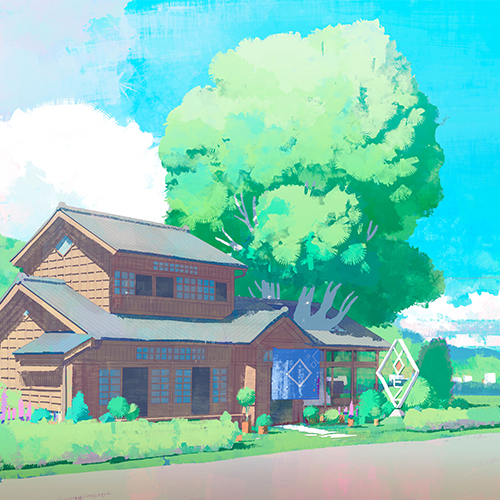07. Voez Café2016 MAY 18位于兰空镇郊区的Voez Cafe’是由一间古色古香的老建筑物改建而成，参天的古树穿过东侧厢房的天花板， 在半开放的空间内可以感受到自然的芬芳与舒适，又能品尝老板娘精心准备的甜点与手冲咖啡。Voez Café的老板娘有着一头秀丽的长卷发，总是挂着笑脸的容貌给人温暖的感觉；据说老板娘原本居住在首都，成年后回到兰空镇接手了故乡的老房子，经过整理之后保留了大多数装潢而成为咖啡厅。
-
 08. 上学2016 MAY 20「喵～～」倏地一声，一条黑色的身影跃上了学校的围墙，轻灵地沿着墙顶走着。穿着白袜的黑足无声交错，前头还有另外两只身形纤细的猫咪。
08. 上学2016 MAY 20「喵～～」倏地一声，一条黑色的身影跃上了学校的围墙，轻灵地沿着墙顶走着。穿着白袜的黑足无声交错，前头还有另外两只身形纤细的猫咪。
玳瑁色的花斑母猫走在最前头，有些脏污的娇小白猫走在中间，最后则是刚刚的那只白脚黑猫。
三只猫咪前后交错，争夺着领先的地位。
除了猫咪之外，兰空高中的学生们也跨着步伐前进着：通霄念书的好学生、活力十足的校队成员、彻夜打电动的电玩迷们，三三两地走向学校大门。
背着吉他的Jessy也在人群中，耳朵挂着硕大的耳罩式耳机，沉静在电台播放的音乐之中。
Muzec，位于首都的独立电台。长期接受着来自世界的独立音乐投稿，不论是摇滚、乡村、电音、饶舌......都有相对应的节目时间。而各大唱片、经纪公司也时常在上面网罗未来之星。
能够站上Muzec公信排行榜的乐手，几乎可以说是一夜成名的保证；更是踏入演艺圈、音乐圈的重要跳板。
也是Jessy一直以来的梦想。
「喵～～喵～喵喵～～」
「喵～喵喵～～」
猫咪们迅速接近，象是发现同伴一般扑了上去。
黑猫亲暱地趴在吉他背袋上，用脖颈磨蹭着Jessy的后脑，惊讶的Jessy只能无奈地挥挥手希望黑猫自行离开。
花猫依然走在围墙的最前头，象是领路人般与Jessy的步伐一致，早晨的阳光在牠背上反射出优美的光晕。
直到黑猫觉得自己玩够了，才轻轻一弹跳回围墙。
至于身型娇小的白猫，早就趴到Jessy的肩膀上发出了舒服的呼噜声。
从旁边看去，Jessy彷彿是带着猫咪伙伴的杂耍艺人。
「真是的……我可不是你们的同伴阿……」虽然相当苦恼，但Jessy只能继续背着野猫们前进。 -
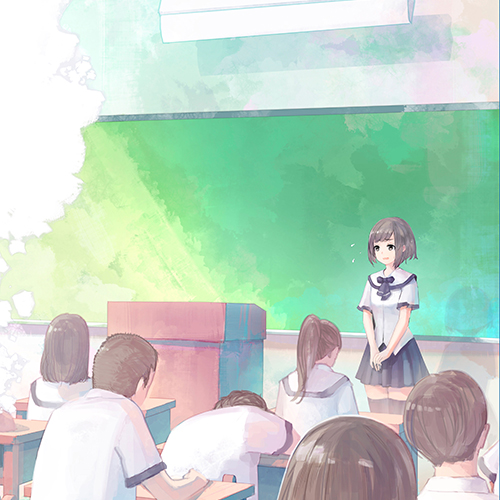09. 班会2016 MAY 24总觉得假期才接近了脚步，回过神时却发现青春的尾巴已悄然流逝。高中的时光即将通往最后一年，蝉鸣象是来不及留下的回忆鼓足了劲；黑板上的倒数一天天减少，分别的日子也越来越近。
二年二班的班会反常地充满闹哄哄地讨论声，不像平常被借用成各种补救课程那样一片死寂。
「园游会要卖烤香肠。」
「烤香肠不如卖鸡排，还可以顺便卖珍珠奶茶！」
「我看还是开女仆咖啡厅吧。」
讲台上，雀拼命地用粉笔记下此起彼落的意见，但还是跟不上同学们发言的速度。男生跟女生们有默契地分成几个阵营，各自拥戴截然不同的意见。
「开什么女仆咖啡厅，你们只是想看女生穿裙子吧！」
「太色了你们这些男生，抗议！抗议！」
「大家一个一个说……讲这么快我记不起来啦……」雀的字写得乱七八糟，粉笔灰雪花洒落在雀的肩膀上。
虽然班上热闹地象是站前的夜市，阿海却依然趴在桌上呼呼大睡。
也许是为了释放那庞大的念书压力吧，即使是在段考、模拟考不断逼近的当下，同学们也要尽情地计划着一年一度的大活动：兰空高中的校庆园游会。
从白天热闹到晚上的园游会、才艺竞赛还有卡拉Ok大赛，许多学长姐们都会回来参加的超盛大活动。
相传只要在园游会当天的晚上，与心仪的对象在学校操场上的「三本柱」下告白成功，就能够考上同间大学。因此，许多人都准备在园游会当天大显身手，誓言要在今年留下最美的回忆。
「雀，让我来吧！」清亮坚定的女声让原本吵闹的三年二班突然安静了下来，接着是椅子滑过地面还有鞋跟清脆地敲过磨石子地面的声音。
二年二班副班长，佐佐木优子。
登场！ -
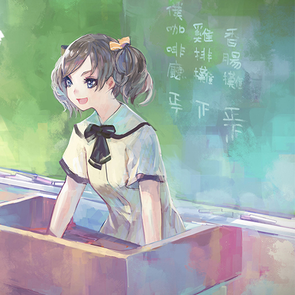10. 魄力2016 MAY 25虽然同样穿着兰空高中的制服，但优子走路的步伐散发出截然不同的气势，象是在走伸展台一般优雅而充满力道。担任副班长的优子穿过整间教室，快步走上讲台。
「优子……」手忙脚乱的雀看到救星出现，内心有种松了一口气的感觉。
「让我来吧，雀。」优子展开灿烂的招牌笑容，拍了拍雀的肩膀。
紧接着转身面对班上还在吵闹中的同学们，深呼吸之后以清亮而又具有穿透力的声音说：「你们这些笨蛋不要一直插嘴啦！一个一个举手提议吧！」
一瞬间，不论男女都被优子的声音所震慑。
虽然是被骂成插嘴的笨蛋，但优子那甜美的笑容和开玩笑般的甜美声调却让人完全没办法生气。
班上安静地有如大考会场，只有电风扇运转的嗡嗡声。
阿海抓了抓头，转个方向继续呼呼大睡。
「各位同学轮流举手提议吧，等等再投票，最高票的就是我们班今年园游会的摊位噜。」优子说完，笑着对鸦雀无声的同学们眨了眨眼。
一分钟后，一名男同学颤抖地举起右手。
「香……香肠摊。」
「雀，帮我写在黑板上吧。」优子说。
「鸡排…鸡排摊。」大梦初醒的同学们纷纷开始举手提议，经过一番整治后大家都遵守秩序地轮流发言，跟刚刚吵闹的状况截然不同。
「女…女仆咖啡厅……」一名胆怯的男同学举起手来，还是坚持着他梦想中的园游会最佳摊位。
砸水球、鬼屋、执事咖啡厅等等提议一一被写上黑板，当优子看到黑板上写了差不多十来种摊位之后，她举起手来请大家先暂停提议。
「那么，我们来投票吧。」 -
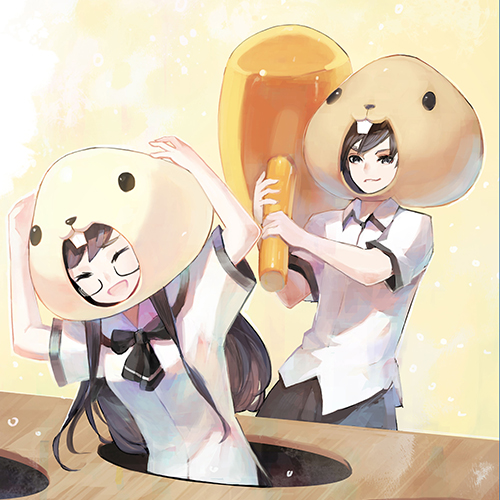11. 掌心2016 MAY 28不同于三年二班那样在优子的指挥之下，全班合力准备着园游会的用具，三班的同学们只能按照老师的指派，组成一个小组来处理这些事务。 虽然被选上的人多少有些抱怨，但还是迅速完成了这次的摊位。
准备好的大型机关摆放在教室的中央：用桌子排成三个横排后盖上不知哪捡来的废木料，漆上油漆的木料则等分地切开九个供人探出头的圆洞。
「在我的精心设计之下，果然使用了最少的材料和经费。」对任何活动都莫名投入的班长推了推眼镜，露出满意的微笑。
Jessy头上戴着非常疗愈的地鼠头套，手上握着巨大的充气槌子，面无表情的站在班长旁边。
「机关！启动！」班长举起了右手，大声喊着。
九个洞里开始接连冒出人影，每位同学都戴着不同颜色的地鼠头套，呈现某种难以查觉的规律；而其中一名的速度与其他人都不一样，象是某种环节脱落的额外设定，芊芊的起落几乎全然随机而无法预测。
「上吧！地鼠毁灭者！」班长再一次大喊。
Jessy一言不发冲向机关，手中的槌子闪电般挥舞。每一次的攻击都有一位同学，或者说是一头地鼠被击倒。
不一会儿光景，同学们都一一被打倒在地，只剩下芊芊一个人负隅顽抗。
「准备好了么？」Jessy问。
「恩。」芊芊一边起立蹲下，一边笑着回答。
「看招！」Jessy似乎也玩出了兴致，冷酷的脸上浮现浅浅的笑容。
「哈哈哈～打不到～～」芊芊双手抱头忽上忽下，嘻笑着躲避Jessy的槌子。两个人彷彿玩开了，连机关跟规则都不管了互相追打。
教室内，洋溢着青春的欢笑声。 -
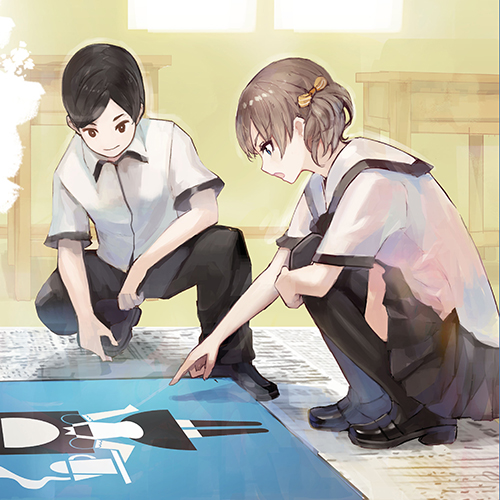12. 加油2016 JUNE 01期中考结束后，兰空镇的气温随着日渐逼近的夏日而急速飙高，日渐酷热的天气预告着春天的告别，湿热的夏季象是敲着大门的不速之客。
三面环山、东面环海的兰空镇每到夏秋之时常常遭受台风的侵袭，有时一个月内有半数以上都在下雨。因此，兰空高中的学生们也会在这时流行起制作晴天娃娃，就怕校庆活动受到影响。
因应即将举办的校庆，二年二班的同学们也分成几个小组，分头准备着所需的用品。由雀领头的小组负责食材和饮料的准备、而由优子带头的则负责摊位的装饰和广告牌、菜单等东西的设计。
「优子，你觉得这颜色怎么样？要不要换更亮眼的颜色？」男同学蹲在刚喷好漆的广告牌旁边，找来优子确认。
以蓝色为基底配上白色的色块和七彩文字，组合成充满夏日气息的咖啡厅招牌；在招牌的一角还画上了一名穿着女仆装的动漫角色。
「有点难抉择呢……蓝色底配白色也挺好看的，还是我们决定两、三个配色再给同学们表决？」优子蹲下身来细细地看着，在看到边角的女仆时虽然一瞬间露出了恼怒的神情，但很快地换回平常的表情。
「这样时间会来不及吧？」男同学担心地说。
「的确是没有时间等同学们一起表决了，今天就要全做完才行。」优子双手抱胸想了片刻后说：「不然这样吧，就麻烦你再做一个不同的配色，等等我们就让在现场的同学们表决就好，如何？」
「应该是可行的方案。」
「那就拜托你噜～」优子露出灿烂的笑容，拍了拍男同学的肩膀后起身面对教室内正忙碌的其他同学。
「大家～今天要把所有准备工作做完唷，一起加油吧！」
「喔～～～」
-
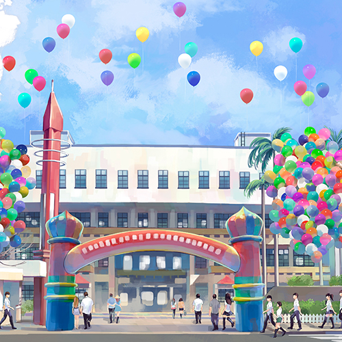13. 园游会2016 JUNE 03
-
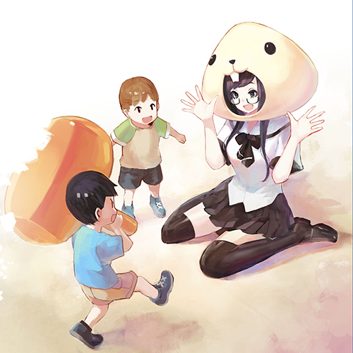14. 孩子王2016 JUNE 04「是芊芊姐姐！」
「芊芊姐姐！！！」幼儿园的小朋友混在人群中，一看到站在摊位外头的芊芊，兴奋地边跑边跳地朝她跑去。
「阿～是附近幼儿园的小朋友～」芊芊见到几位熟识的小朋友，也露出了开心的笑容，蹲下身来迎接他们。
小朋友们象是公牛般撞进芊芊的怀里，热情地围着她又叫又跳。
「芊芊姐姐妳在干嘛？」
「芊芊姐姐妳怎么戴这个帽子？」
「我知道我知道，这是地鼠星人的帽子！」小朋友们此起彼落地喊着，为已经充满人潮的摊位增添了更多的活力。
「哈哈～～我是可怕的地鼠星人～～我要来吃你们噜～～」芊芊双手大开，象是老鹰般追着小朋友们。
「哇～～救命阿～」小朋友们嘻笑着、尖叫着，在教室内乱窜。
一名小朋友不知从哪借来了摊位的气球槌，象是扛着十吨重的大铁鎚般朝着芊芊走来。
「嘿咻！嘿咻！」
「攻击！攻击！是地鼠星人！」小朋友们开心地尖叫着。 -
 15. 咖啡厅2016 JUNE 07在经过一连串的校方活动、长官跟来宾的致词后，热闹的兰空高中园游会才终于正式开始。 每个班级都用尽全力把自己的教室装扮成各种不同的摊位，甚至派出穿着布偶装的同学举着牌子四处宣传。
15. 咖啡厅2016 JUNE 07在经过一连串的校方活动、长官跟来宾的致词后，热闹的兰空高中园游会才终于正式开始。 每个班级都用尽全力把自己的教室装扮成各种不同的摊位，甚至派出穿着布偶装的同学举着牌子四处宣传。
「雀，二桌再追加两个草莓卡士达松饼！」
「没问题，这边两份先帮我端出去！这是四桌的喔～」雀穿着围裙，率领着三个同学一起负责餐点的制作。
餐饮经验丰富的雀穿上围裙、戴上厨师帽颇有一番架式，同学们听从她的指示分成了几个小组：制作餐点、调制饮料、补充物资和宣传等等，看着不断涌进来的人潮，同学们虽然忙碌但都露出了愉快的笑容。
至于现场接待与收送餐点的工作，则是由优子与两名女同学来负责。
优子绑起了双马尾，身上穿着同学们一起连夜赶工制作的黑色女仆装；蓬松的黑色澎澎裙上罩白色束腰，带有蕾丝滚边的白色围裙挂在她的颈项。
就连让男孩子为之神魂颠倒的绝对领域，也在女同学的坚持下让优子穿上了标准的黑色大腿袜和黑色皮鞋，完美地重现了女仆装的精神。
「这…妳们也太认真了吧～」优子刚换上全套服装时，惊讶地看着镜中的自己。万万没想到的是，同学中正好有一群cosplay的狂热份子。
「在我硝子的眼中，是不能有不完美的Cos的！既然要弄，就要弄到最棒！」身材高挑的女同学硝子推了推眼镜，一脸自豪的说。
「优子，外面很忙耶，快来帮忙送餐啦！」负责点餐的同学送来最新的点菜单，拉了才刚换好衣服的优子就往外跑。
「这组英式下午茶快帮我送去四桌！」
「好…好啦。」优子接过托盘，踩着皮鞋一踏一踏的走出了备餐区。
优子才刚走出备餐区，立刻吸引了所有人的目光。
只见她踩着优雅有如台步般的步伐穿过人群，澎澎裙随着脚步微微跳动。
「您好，这是您点的英式下午茶套餐。」轻巧地放下餐点之后，优子以微笑结束服务，转身走回备餐区。
「这摊的服务生…好漂亮喔…..」四桌的客人还没从惊讶中回过神来，傻傻地看着优子离去的背影。
「你不觉得好像在哪看过她么？」 -
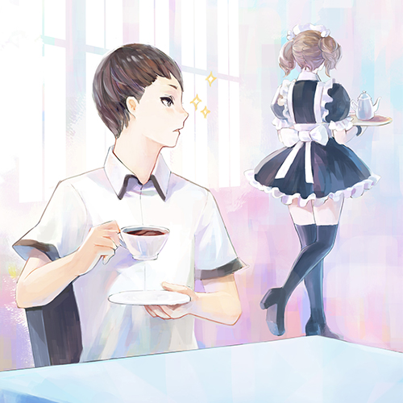16. 迷恋2016 JUNE 09三年二班的咖啡厅摊位很快地打出了名号，许多客人纷纷慕名而来，有的是为了好吃的甜点，也有的是想来一睹女仆装的美丽风采。
客满的三年二班只得额外安排找一位同学在门口登记，让没有位子的客人们在外头稍等，俨然就象是首都东区最热门的下午茶名店。
而通往三年二班的走廊也变成各个班级的重要战场，想要拉走客人的其他同学纷纷使出浑身解数在这里招呼着。
「二年十班，二年十班的章鱼烧摊位推出买二送一唷～」
「二年八班，来二年八班才能吃到兰空镇最佳的道地小吃，快来二年八班唷～～」同学们的叫卖声此起彼落，谁也不让谁地要喊出最大的音量。
狼挤身在人群中，笔直地走向三年二班。
沿途想要向他推销自家摊位的同学们，都被他异常严肃但又带着腼腆的表情所吓退，纷纷转向别处推销。
「你好，请问几个人呢？」门口负责招呼的同学也穿着女仆装，跟优子比起来这位女同学更象是富豪人家的总管。
「我…阿…一个。」狼有些结巴，用手指抠着自己的右脸颊。
「我帮你看一下现在的座位唷……恩…刚好有一个空位呢，请这边跟我来吧。」女同学笑容可掬地领着狼走入教室，其他穿着女仆装的同学们看到新的客人，纷纷以最优雅的姿势转向门口。
「欢迎回家，主人～」
突然吸引了所有人目光的狼有些尴尬，赶紧低着头跟着来到座位；随意的点好餐点和饮料后，狼的视线不知不觉地跟着优子在教室内穿梭。
「可恶，那两个家伙居然敢靠近我的优子姐……」当优子端着茶点为客人送上饮料的时候，狼的内心突然有一阵醋意。
但当优子看向他这边时，他又赶紧低下头来假装喝茶。
「差点…差点就被发现了……不过优子姐姐穿这样真的……好美。」
当狼还沉浸在偷看优子的美好时光之时，外头传来了学校广播器的声音：「大会报告！大会报告！今年度的才艺竞赛即将于下午五点于大礼堂举行，请各位一起来目睹参赛者们的风采！一起为表演者们加油！」 -
 17. 别紧张2016 JUNE 10「妳可以的，妳可以的，妳可以的……一直鼓励别人上台，要是自己没胆子上去的话，一定很奇怪吧......」大礼堂的后台，雀低着头自言自语着； 才刚脱下的围裙和厨师帽扔在一旁，雀的身上还沾有奶油和馅料。
17. 别紧张2016 JUNE 10「妳可以的，妳可以的，妳可以的……一直鼓励别人上台，要是自己没胆子上去的话，一定很奇怪吧......」大礼堂的后台，雀低着头自言自语着； 才刚脱下的围裙和厨师帽扔在一旁，雀的身上还沾有奶油和馅料。
「已经准备这么久了……一定没有问题的……」雀在手心上画了三个人字，一口吞下肚。雀在后台走来走去，焦急的双脚几乎在地上绕出一道担忧的痕迹。外头传来震耳欲聋的尖叫声和掌声， 紧接着就是主持人清脆的嗓音。
「谢谢！谢谢他精彩的演出，接下来我们欢迎三年二班的，雀～～～」主持人的声音几乎响彻了礼堂，一旁的工作人员推了一下雀的肩膀，才让她迈出步伐，笔直地朝舞台中央走去。
才刚走出后台，刺眼的舞台灯光照出了一个圆形光圈，等着雀的到来。
「大…大家好……我是三…三年二班的雀。」雀看着台下黑压压的人群不禁结巴了起来，紧抓着裙角的手兀自颤抖着。
「雀！加油！！！」
「雀，不要紧张～我们支持你！！！」由阿海带头的同学们，在台下一阵叫喊，反而引来观众们的掌声。
「谢…谢谢。」雀鞠了九十度的躬，抬起头来说：「那…我今天…我今天要唱的歌是……」
一名戴着墨镜的光头大叔挤身在观众群中，聆听着雀的歌声。虽然一开始雀有些紧张，但渐渐地进入状况之后，那充满吸引力的嗓音却让现场的所有人都如痴如醉，评审们也都惊讶地合不拢嘴。
「恩……唱得还不错。」光头大叔微笑着，跟着四周的人一起鼓掌。
台上，雀终于露出了放松的笑容。 -
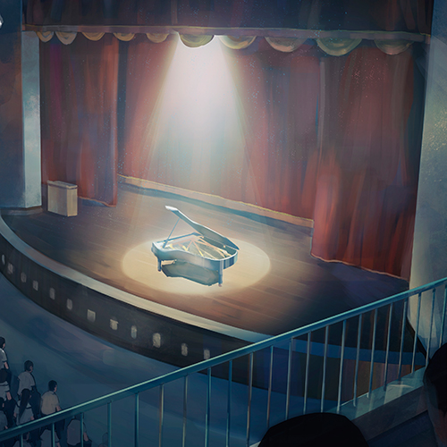18. 大礼堂2016 JUNE 15
-
 19. 演奏2016 JUNE 17歌唱比赛结束之后，全场的气氛早已经被炒到最高；大礼堂内挤满了看比赛的人潮和加油的学生们，每个人的脸上都写满了兴奋的神情。而紧接之后的，是纯音乐的才艺竞赛。
19. 演奏2016 JUNE 17歌唱比赛结束之后，全场的气氛早已经被炒到最高；大礼堂内挤满了看比赛的人潮和加油的学生们，每个人的脸上都写满了兴奋的神情。而紧接之后的，是纯音乐的才艺竞赛。
主持人在舞台前介绍今年的参赛者，后头的工作人员则准备着各式各样的乐器：大大小小的音箱、整套的爵士鼓，还有特别从音乐教室商借来的平台钢琴等等，也一一摆设到位。
参赛者们在主持人的介绍下轮番登场，有的表演吉他独奏，有的演奏古典钢琴，或者表演热闹磅礡的爵士鼓，每一位听众都沉静在各异其趣的音乐风格中，享受着美好的时光。
Jessy和阿海也在选手区准备着，阿海将吉他靠在大腿上，慵懒地拨弄着节奏；坐在他隔壁的Jessy则戴着耳机沉静在自己的世界中，手上的pick飞快地在琴弦上舞动着。
一名身形单薄的男同学穿着素雅的服装走上舞台，草草地向台下敬礼后便坐在钢琴椅上，有如冰山般的沉着和热情如火的主持人形成强烈的对比。
「紧急宣布！紧急宣布！由于原代表三年二班的同学身体不适，因此大会在早上已经受理了他们临时更换参赛同学。不过这位同学似乎比较害羞喔，他这次带来的曲目是......请大家给予他热烈的掌声！」
掌声静止，男同学的双手象是羽毛般落在琴键上。
第一个琴音之后，暴雨般敲打出毫不间断的音符，男同学的手指象是大黄蜂般不停飞舞，上下起落地演奏着迅速却又精准的音乐。
听众们都安静极了，男同学所弹的乐曲已经超越在场所有人的想象能力。阿海嘴巴微张的看着台上，一旁的Jessy停下练习，脱下耳机听着。
「Jessy，你…..有听到么？」阿海的手紧抓着吉他，微微颤抖着。
「恩……弹的，很棒。」第一次听到如此特别的钢琴演奏，揉合了古典和爵士、摇滚的风格，让Jessy也相当惊叹。
「我…我忍不住啦！」阿海抓起吉他站了起来，穿过人群冲往台上。
「喂……别….真受不了这家伙。」Jessy摇摇头，跟着站起身。 -
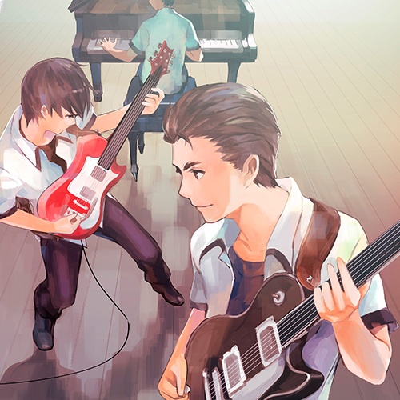20. 即兴2016 JUNE 19「同學！同學你……」阿海甩開工作人員跳上舞台，導線一插、音箱一開便刷起了吉他。充滿節奏感的power cord立刻轟炸著大禮堂，但又與原本鋼琴的聲音和諧地相互呼應著。
阿海看向彈著鋼琴的男同學，只見那位同學的表情從原本的狐疑，慢慢地轉換成享受著音樂的神情。台下的觀眾們先是被阿海的亂入搞得不知所措，但聽到兩人的音樂之後，歡呼聲、尖叫聲再一次地掀開了天花板。
「真是的……這樣老師要怎麼評分啦。」主持人退到舞台旁，一臉尷尬地看著台下的評審老師們，老師們也沉浸在熱鬧的氣氛中。
「那就，不要評分吧。」Jessy提著吉他走過主持人身旁，逕自走上舞台。
「Jessy，太慢啦！」阿海大叫著，臉上滿滿都是快樂和興奮的神情。
Jessy調整好音箱，俐落地加入了兩人的合奏。
與阿海那滿溢著力量和節奏感的刷cord不同，Jessy的破音調得恰到好處，充滿空間感的和絃再加上娃娃器的效果音，讓音樂的深度跟飽滿更加完整。
合奏了一分多鐘後，阿海看了一眼男同學，然後舉起吉他大力地刷cord，琴頭直指Jessy。
「Solo吉他手，Jessy！」阿海大喊著；與此同時，男同學的鋼琴也轉為合弦的搭配，與阿海一同襯托Jessy的吉他獨奏。
Jessy的手指飛快地在琴弦上來回飛舞，右手的pick上下跳躍撥弦，編織出一連串狂野而豐沛的音階，而這一大段的solo更是與阿海的吉他、男同學的鋼琴配合的天衣無縫。
「想不到……這間學校還有這麼有趣的組合。」光頭大叔的表情饒富興味，聆聽著三人的即興演出。
「看來這趟回來，聽到了不少有趣的東西呢。」 -
 21. 大雨2016 JUNE 23
21. 大雨2016 JUNE 23 -
 22. 重现2016 JUNE 25园游会结束后，多数的班级会留在学校或者到附近的餐厅聚餐。庆典的气氛一直延续到深夜，同学们才依依不舍地回家。周末好好休息， 下周再来面对期中考的成绩；而在这个周末过后，学校会多了几对情侣也不一定。
22. 重现2016 JUNE 25园游会结束后，多数的班级会留在学校或者到附近的餐厅聚餐。庆典的气氛一直延续到深夜，同学们才依依不舍地回家。周末好好休息， 下周再来面对期中考的成绩；而在这个周末过后，学校会多了几对情侣也不一定。
Jessy回到家，随手从冰箱抓了面包和牛奶后便回到房间，一边吃着一边打开计算机。在礼堂与阿海和男同学即兴的旋律还回荡在Jessy的耳边，他迫不及待地想要记录下来。
澎派的乐音、激昂的节奏、有如胡乱弹奏却又充满节奏和对位美感的音阶，纷纷在Jessy的脑海中浮现。
阿海的刷cord再次充满耳内，熟悉的力量和节奏感象是凶猛的浪潮，Jessy按照记忆刷着节奏，用录音软件记下这段音符。Jessy反覆地尝试、录音，才终于拼凑起长达三分多钟的乐曲。
完了阿海的部分后，Jessy接着开始录制自己的部分，虽然是在现场即兴创作的音阶与节奏，但毕竟印象还相当深刻，进展的速度也快了许多；时钟悄悄地走向八点， 一转眼已经过了一个多小时。完成了两人的录音之后Jessy喝了口桌上的牛奶，开始揣摩着那名同学所弹奏的钢琴旋律。
时而激昂时而流畅，有时沉重悲伤有时又雀跃轻盈，间而狂放地有如暴雨洒落大量的音符；Jessy苦恼地回忆着那一连串难以抓住的音阶，揉合了各种风格却又毫不突兀的演出。
「难道……只有他才做得出这样的技巧吗？」Jessy回忆着那名身形单薄的男同学，费尽心思地重现那一连串音阶；十几分钟过去，乐谱上却只有两节不到的进展。
「叮咚！」手机震动着，打断Jessy的思绪。 -
 23. 邀约2016 JUNE 26「刚刚那间店不错吧？」周末的午后，首都的街道上充满了逛街的人潮。才刚用完午餐的Jessy与优子，悠哉地散步着。
23. 邀约2016 JUNE 26「刚刚那间店不错吧？」周末的午后，首都的街道上充满了逛街的人潮。才刚用完午餐的Jessy与优子，悠哉地散步着。
「蛮好吃的……」Jessy的表情闪过一丝凝重，很快地被优子发现。
「不用担心，那间店是我之前合作过的店家，所以有特别优惠唷，折价之后只要平常的一半呢。」优子笑着说。
两人有一搭没一搭地聊着园游会的趣事，穿梭在来来去去的逛街人群之间，不时优子会停下来看看店家的衣服，或者亲切地陪认出她的粉丝合照。有些路人也会在路过两人之后，特意回头看了看优子。
「想不到妳这么受欢迎。」
「嘿嘿，我可是从国中开始就开始工作了，常常登上杂志呢！」优子灿烂地笑着，领着Jessy继续往目的地走去。
两人又走了一阵，穿过贩卖饰品和可爱杂货的巷道之后，来到了笔直的大马路，路口被高耸的建筑物包围，建筑物上纷纷悬挂着各式各样的大幅广告，最新的电影预告在巨大的荧幕上不停拨放着。
「这里是？」Jessy对眼前的景色有些眼熟，似乎在某个网页上看过。
「你不是一直想去一个地方么？」优子拉着Jessy的手，一边指着对面的某栋大楼。灿烂的斜阳照射在优子的脸庞，闪烁着活力的光彩。
穿越马路时，两人突然被一位男子拦了下来。
「不好意思。我是FashionToday的外拍摄影师，两位是情侣么？可不可以请两位让我拍几张照片，我想登在杂志上。」
「我们？」Jessy一脸不自然地看着男子，优子却很自动地挽着Jessy的手，大方地笑着说：「好阿，不过你要把我们拍好看一点喔！」 -
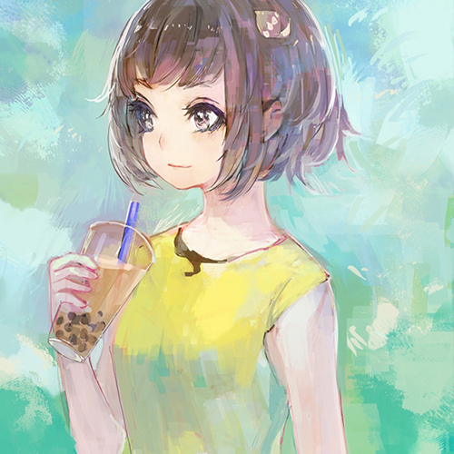24. 盛夏2016 JUNE 28炙热的烈阳下，弥漫着果实香甜气息的果园里，包着花头巾的果农们拉着推车、戴着棉布手套穿梭在细碎的光条中。林叶扶疏的果园里，结满一颗又一颗硕大的火龙果。
果树和鞭柱上布满了锐利的针刺，果农们早已习惯被树上的刺螫伤。
在一班身手利落的果农们之中，有个娇小的身影穿梭其中。
「好痛。」雀虽然戴着手套，但一根小刺仍然刺得她吃痛大叫。
「妹妹你小心一点，这刺虽然没有毒，但刺到还是很痛的。」一旁的大婶利落地摘下两颗果实，丝毫不受影响。
「这是做面包那家的小孩吧？怎么放假还来这里帮忙？」
「小孩子就是要这样。杂货店那家的一天到晚跑去海边玩，说是去冲浪店打工，根本只是不想帮忙顾店。」几位果农你一言我一语地聊着，手上的动作没有半分的滞慢。
雀跟着推车一步步前进，虽然还是会被鞭柱上的针刺刮伤，但渐渐地也能跟上大家的速度。
「大家辛苦了，这边有凉的可以喝喔！」忙了一阵子后，果园的主人提着一大袋饮料，吆喝着大家到树荫处休息。
雀挺直腰杆伸展着疲劳的身躯，发出有如猫咪般的呼噜声。
今天，又是忙碌的一天。
-
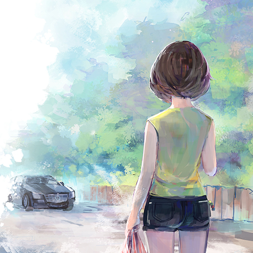25. 偶遇2016 JUNE 30夏日午后，烈阳晒得柏油路都发烫。慵懒的猫儿蜷缩在树荫下打盹，整个小镇陷入一种集体昏睡式的悠闲状态。
蝉鸣声不绝于耳，更增添了那让人昏昏欲睡的气氛。
雀穿着轻松的短洋装、戴着草帽，提着装满水果的塑料袋走在路上。
「哈呼，好热喔…….怎么还没七月就这么热了……」雀俏皮地吐着舌头，脸颊上缀满了晶莹的汗珠。
一辆黑头车从路口转进了街道。
虽然才刚开始放暑假，但西点店的工作并没有减少。由于不用去学校上课的缘故，两姐弟几乎全天都在店里帮忙。
「恩…这次拿回来的水果要怎么做才好呢？虽然拿到了好吃的火龙果跟金枣，但好像不容易加在蛋糕里呢……」为了帮店里开发新的产品，雀决定利用暑假的时间尝试各种食材，但一个月过去却一点成绩都没有。
苦恼的雀一边想着，不自觉地偏离原本的路径。
尖锐的煞车声和喇叭声惊醒了雀，一群野鸟从树林里冲上了天。
雀吓得差点摔倒在地，喝到一半的珍珠奶茶滚到了路边。不一会儿，才赶紧走回路边；喇叭声终于停止，黑头车缓缓地从雀的身边驶过。